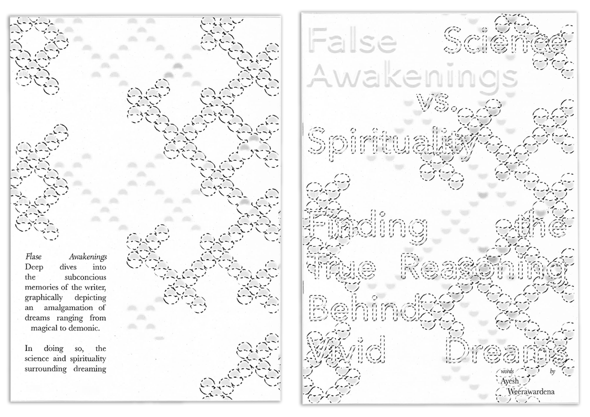

Guide to Sustainable Design (2020):
This publication is an exploration of typography through the vivid and highly graphic nature of wild dreams. Because the science behind dreams still remains unclear to some extent, there is still continuous debating about why dreams occur. The purpose of this exploration was to form a clearer understanding of the relationship between type and imagery/illustration whilst also providing an experience that others may find intriguing and relatable.

A4 printed on 80gsm 100% Recycled paper stock